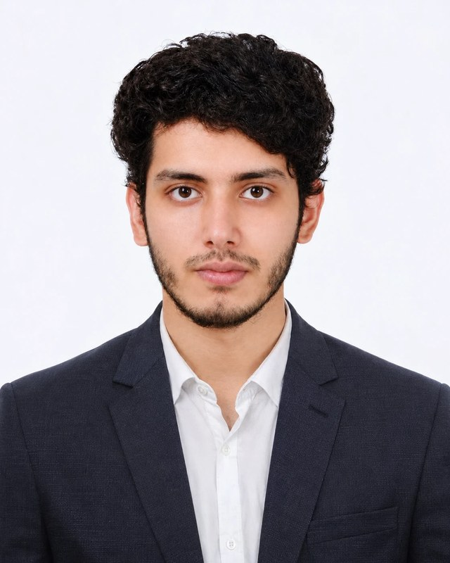

Arafat Rahman
Lecturer in Physics
Institute of Natural Sciences, United International University, Dhaka, Bangladesh
Condensed Matter Physicist
Biography
I am a Lecturer at the Institute of Natural Sciences, United International University (UIU) in Dhaka, Bangladesh. I work in computational and theoretical condensed matter physics, using first-principles methods to understand and predict the behaviour of quantum materials.
My current research centres on altermagnets, a recently identified class of magnetic materials that combine zero net magnetisation with spin-split electronic bands, and on how their magnons and electronic topology can be harnessed for spintronics. More broadly, I study topological materials, conventional and unconventional superconductivity, half-metallic magnets and functional perovskites for energy and optoelectronic applications. Group theory and crystal symmetry run through all of this work: I use them to classify electronic and magnetic states, explain band degeneracies and topological features, and decide which materials are worth computing in the first place.
I received my Bachelor of Science in Physics from the University of Dhaka, where I am also completing my Master's degree in Physics. Before joining UIU, I was a Research Assistant in the Department of Mathematics and Natural Sciences at North South University, where I carried out density functional theory research, set up the group's high-performance computational workflow, and trained junior researchers. I then served as a Teaching Assistant in the Department of Mathematics and Physical Sciences at BRAC University, where I conducted undergraduate physics laboratories.
Research Vision
My goal is to connect symmetry, magnetism and topology in real materials, and to turn theoretical insight into concrete predictions that experimentalists can test and engineers can use.
Altermagnetism and magnon physics
Build a predictive understanding of altermagnets, including their spin-split bands, chiral magnons and Weyl states, and identify room-temperature candidates for low-power, high-speed spintronic devices.
Topology meets superconductivity
Search for materials where nontrivial band topology and superconductivity coexist, and understand how strain, doping and pressure can tune them, toward platforms relevant to quantum technologies.
Computational physics in Bangladesh
Grow a strong first-principles research culture locally: training students in modern electronic structure methods, building open and reproducible workflows, and collaborating internationally.
Research Interests
Altermagnets and magnetic quantum materials
Exchange-driven spin splitting, chiral magnons and topological Weyl states in metallic altermagnets; spin-wave dispersions and exchange interactions from first principles.
Topological materials
Band topology, Weyl and Dirac semimetals, surface states and Berry-curvature-driven responses, studied with Wannier-based tight-binding models.
Superconductivity
Electron–phonon superconductivity in semimetals and layered compounds, and strain as a route to higher critical temperatures.
Spintronics and spin-caloritronics
Half-metallic ferromagnets, spin-polarised transport and lattice thermal transport for spin-caloritronic applications.
Functional perovskites for energy
Halide, chalcogenide and hydride perovskites for photovoltaics, optoelectronics and solid-state hydrogen storage, linking DFT predictions to device-level simulation.
Lattice dynamics and anharmonicity
Phonons, anharmonic lattice dynamics and thermal conductivity, and their role in stability, transport and superconductivity.
Group theory in solid state physics
Space-group, magnetic-group and spin-group symmetry analysis of crystals: symmetry-protected band degeneracies, selection rules, and the symmetry origin of spin splitting in altermagnets and of topological states.
Methods and tools
Selected Publications
Journal of Materials Chemistry A (2026)
Journal of Alloys and Compounds Communications (2026)
Physical Chemistry Chemical Physics (2026)
Scientific Reports (2024)
DOIScientific Reports Physics Top 100 of 2024
Experience and Education
Positions
-
PresentLecturerInstitute of Natural Sciences, United International University, DhakaTeaching undergraduate physics and continuing research in computational condensed matter physics.
-
Sep 2026 – Oct 2026Teaching AssistantDepartment of Mathematics and Physical Sciences, BRAC University, DhakaConducted undergraduate physics laboratory sessions, assessed coursework and assignments, and supervised quizzes and examinations.
-
Aug 2025 – Feb 2026Research AssistantDepartment of Mathematics and Natural Sciences, North South University, DhakaFirst-principles DFT research; installed and maintained the group's computational stack (VASP, Quantum ESPRESSO, WannierTools, EPW, ALAMODE); trained and mentored junior research assistants.
Education
-
OngoingMaster of Science in PhysicsUniversity of DhakaThesis research on altermagnetic systems.
-
2025Bachelor of Science (Honours) in PhysicsUniversity of Dhaka
Fellowship
-
2025National Science and Technology (NST) FellowshipMinistry of Science and Technology, Government of Bangladesh
For Prospective Students
I welcome motivated undergraduate students at UIU and elsewhere who are interested in computational physics, quantum materials or materials design. Students working with me learn density functional theory, electronic structure calculations, magnon spectra, superconducting transition temperatures, group-theoretical symmetry analysis, Wannier-based topology analysis, and scientific programming on Linux and HPC systems, with the goal of contributing to publishable research.
If you are interested, please email me with a short note about your background and which of the topics above interests you most.
Get in Touch
I am happy to discuss research collaborations, computational projects and student supervision. Email is the best way to reach me.
- arafatrahman@ins.uiu.ac.bd
- Affiliation
- Institute of Natural Sciences
United International University - Address
- United City, Madani Avenue, Badda, Dhaka 1212, Bangladesh
- Scholar
- Google Scholar profile